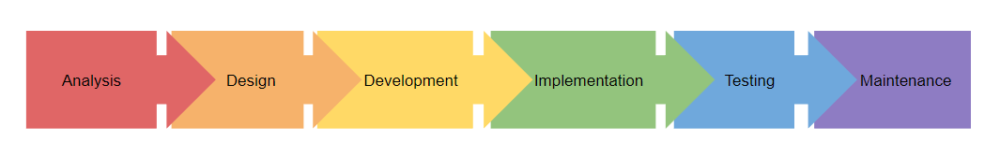
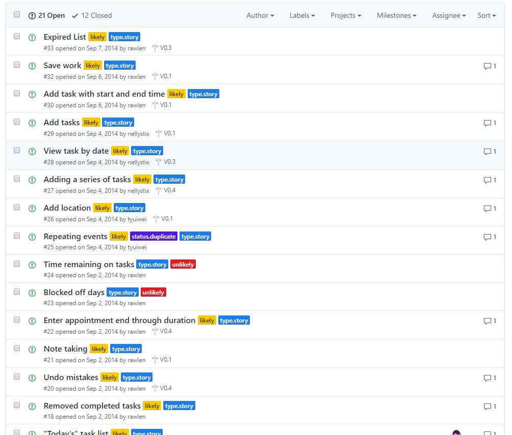
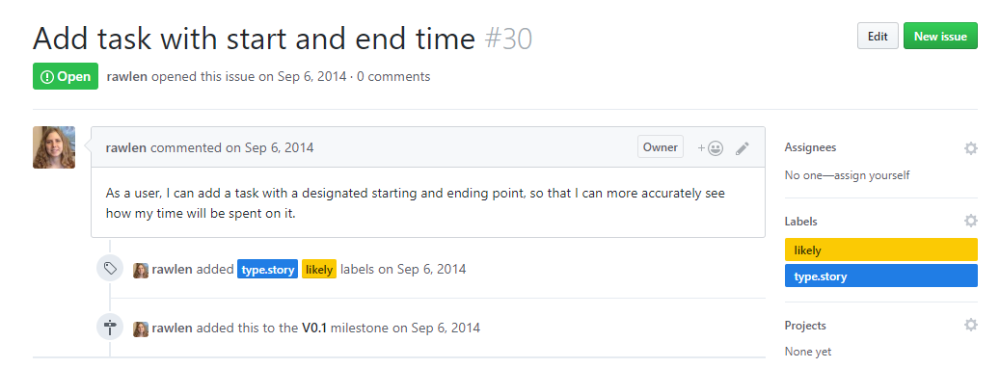
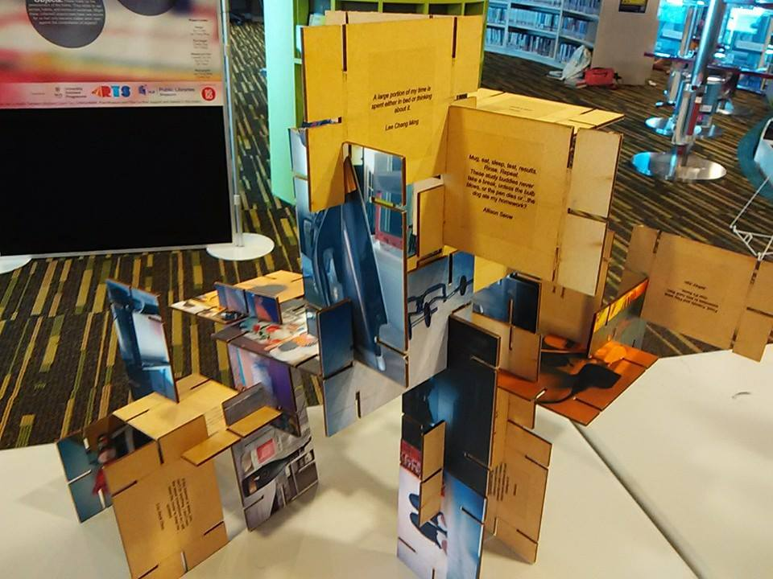
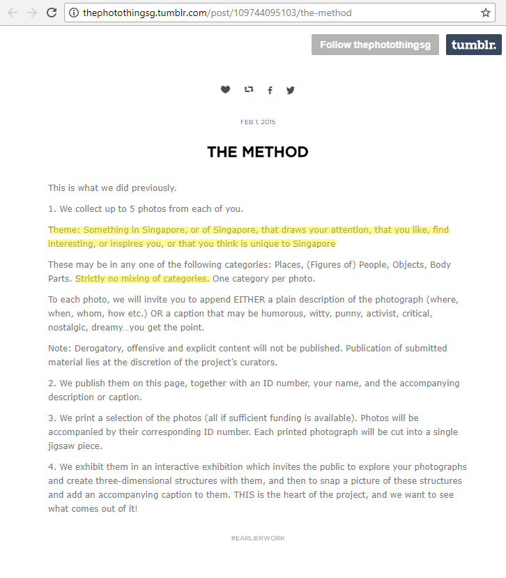

Most creative endeavors are considered “projects” – an individual or collaborative enterprise that is carefully planned to achieve a particular aim (Oxford Dictionaries. Retrieved 6 Sep 2017). To be honest, I’ve never had to look up the word ‘project’ till I had to justify my use of it in this case, and noticing it now, it’s interesting that they use the words “carefully planned” in the definition. How do you “carefully plan” a project – where do you start?
We software engineers have a ton of principles, guidelines, and frameworks to give some structure to what is otherwise a very messy task. I found this out in my second year as a computer science major when I took the introductory module to software engineering. This is the Software Development Life Cycle (SDLC) that we were taught in this module, the waterfall model:
so linear! so structured!
In the analysis stage, our task is to figure out the requirements of the project. In the module, we were to build a task manager software, like a to-do list or planner. The pictures below show how we listed requirements for the project.
 I remember leaving the module thinking that software designers had an incredibly difficult job indeed. Our project for this semester was easy, straightforward, simple. Task managing software are a dime a dozen in the market. For people creating more elaborate or novel software, I couldn’t imagine how anyone could know everything from the get-go, how they would know what to look out for, what to plan for.
In short, I believed that to develop software well, one would have to have everything planned out from the start.
Enter my next project:
the main “product” of our project
a structure made out of the photo cards by a member of the public
At the end of that year, I joined an ongoing photography project called The Photo Thing. Because this project had been through several exhibitions already, I felt that the project was rather stable – the steps we had to take were obvious, and we just had to execute each step to see the project to completion. The steps are shown below. Notice that the theme written here is really vague. The poster pictured next shows the theme we eventually decided upon.

Not only did the theme change, but where we once said “no mixing categories”, we now also allowed people to tag their submissions as both “practical and important”.
How did the project change so much given my initial impression that the project’s goals were pretty much fixed and predefined? Here is a page of my personal notes from the discussions that we had over the project’s re-conception.
is this the best I could do to document our process?
The next iteration was to be funded by the SG50 Celebratory Fund, which funds projects which “raise awareness of Singaporean identity” and “engage the community”. Because the platform we would be given was larger, the audience for the project changed. Where once it used to be small, dedicated groups of people (NUS students, regular art gallery-goers, USP), now we had to cater to the much larger, more general audience, people in Singapore.
We thought about the goals of an “average” person in Singapore (rectangle, bottom right). We failed, naturally, but we realized that in doing so we were thinking about practicality and importance, and the difference between those things. So we decided to provide these two categories, hoping to engage conversation about what practicality and importance meant to Singaporeans.
Because The Photo Thing had to change because of its audience, I came to question what I knew about software engineering as well:
How can software development be so straightforward, if software is something used by people? Users provide complaints or feedback to the software, changing the way it works, or the way it needs to be implemented. Requirements change. What do we do?
dealing with changing requirements
The Waterfall SDLC is not the only one out there! Later, I learnt to work within the Agile methodology (pictured left). By repeating the cycle in short bursts, the method allows developers to continuously and incrementally improve their product.
This way, requirements can be adapted and changed based on feedback gathered through development and from users.
However - it is not a panacea! It may seem now, as it did to me upon finishing a project where we utilized it, that the Agile methodology is The Solution for all software designers. But, if I had used it for the task manager, it would have been unnecessary work. The Waterfall model worked fine; why revisit the requirements? The task remains for me (or the software designer) to assess the type of project and the situation in which the project is being developed to decide on what kind of process might be the best fit.
learning to document and communicate creative processes
In writing this post, I realized that the only points of reference I had regarding the design decisions of The Photo Thing were (1) the notebook scrap shown earlier and (2) my (waning) memory. On the other hand, I had plenty of documentation to work with for the software engineering projects. It made me wonder: If The Photo Thing were to continue under a different team, how many of those design decisions would be overlooked and forgotten?
The blog-post detailing “The Method” was a good example of institutional memory that was documented and available for reference. For creative endeavours, blogs are a good way to document the progress and updates to your project. For example, in the blog of the game World of Goo, the thought process in the midst of development is communicated. And since our blog fell out of use – perhaps “meta-documentation” specifying roles and responsibilities throughout iterations would help.